Es la medida de la cantidad de carga eléctrica que atraviesa una determinada sección de un conductor de un circuito cerrado en la unidad de tiempo. También recibe el nombre de intensidad y se mide en Amperios.
Ejemplo
La corriente que circula por ese cable es tan alta que resulta peligrosa.
Resistencia (magnitud)
Definición
Es la medida de la oposición al paso de una corriente eléctrica a través de un material.
Ejemplo
Los materiales aislantes de la electricidad se caracterizan por tener una muy alta resistencia eléctrica.
Tensión
Definición
Es aquello que indica la energía que se transmite a una carga eléctrica en un determinado circuito. También recibe el nombre de diferencia de potencial o de voltaje (en referencia a la unidad en que se mide que es el Voltio).
Ejemplo
La tensión en los enchufes de nuestras casas es de alrededor de 230 Voltios.
Hasta ahora hemos visto las señales analógicas y digitales, las entradas y salidas de nuestra placa y su importancia en el funcionamiento de la misma.
En este apartado vamos a aprender cómo es y cómo funcionan los sensores de nuestraplaca robótica.
Luego veremos cómo se relacionan los sensores con los demás componentes (entradas, salidas y microprocesador). Esto es fundamental para el proceso de relación de un robot con su entorno: reciben estímulos externos, los procesan y dan determinadas respuestas.
Seguro que mucha de la información que vas a ver a continuación será nueva para ti, por lo que puede ser normal que a veces no entiendas algo. Si esto pasa, no te desanimes y pregúntale a tu profesora o profesor. También puedes ir apuntando en tu cuaderno algunas de las ideas importantes que vayas trabajando para que no se te olviden. No hace falta escribirlo todo, solo lo más importante.
¡Ánimo! ¡Merecerá la pena!
1. Recuerda: Analogía entre un sistema robótico y el cuerpo humano
Recuerda que en el apartado "2. Antes de empezar, activamos nuestros sentidos" realizaste un ejercicio en el que analizaste la similitud entre los sentidoshumanos y los sensores para algunas acciones.
Lo que ocurre nos puede ser de utilidad para entender lo que ahora vamos a ver, así que repasamentalmente qué es lo que hicimos en ese ejercicio.
2. ¿Qué tienen en común estos aparatos?
En pareja revisa las siguientes imágenes y piensa ¿qué tienen en común todos estos aparatos para poder percibir información del entorno?, ¿qué elementos crees que necesitan?, ¿cómo piensas que lo hacen?
Teléfono móvil
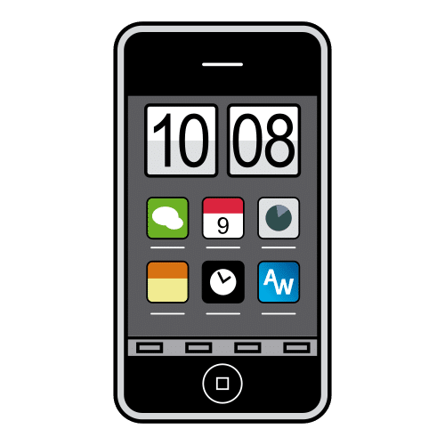
Termómetro
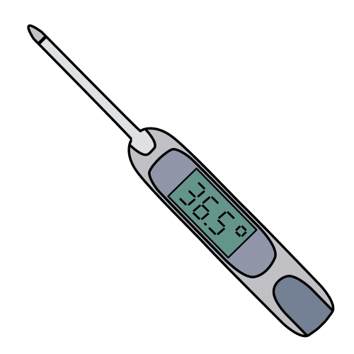
Frigorífico
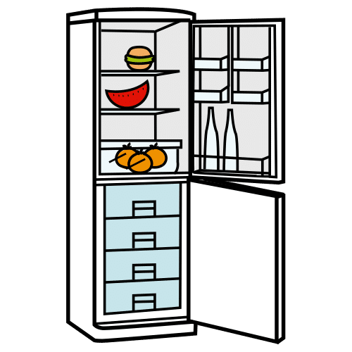
Pasivo infrarrojo (PIR)
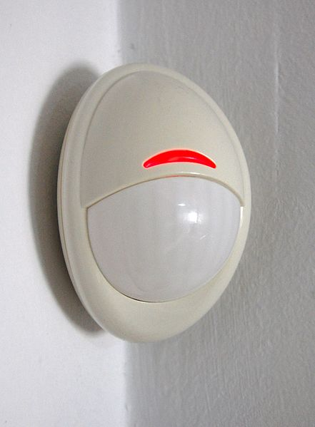
Robot aspiradora
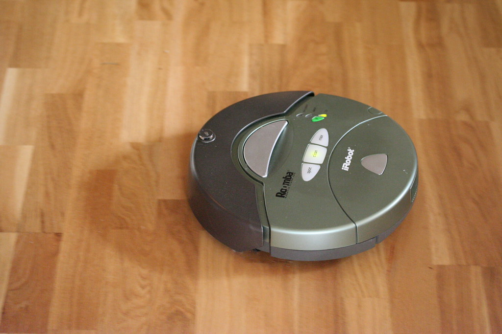
Máquina de aire acondicionado
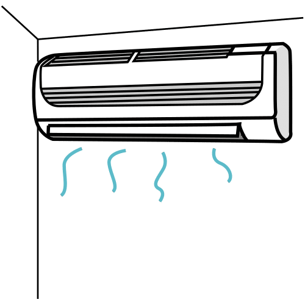
Tensiómetro
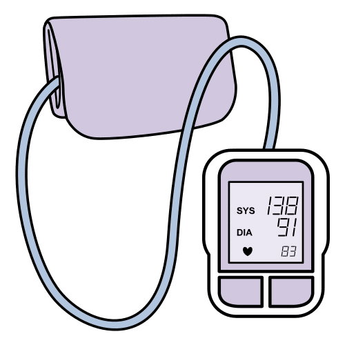
Robot
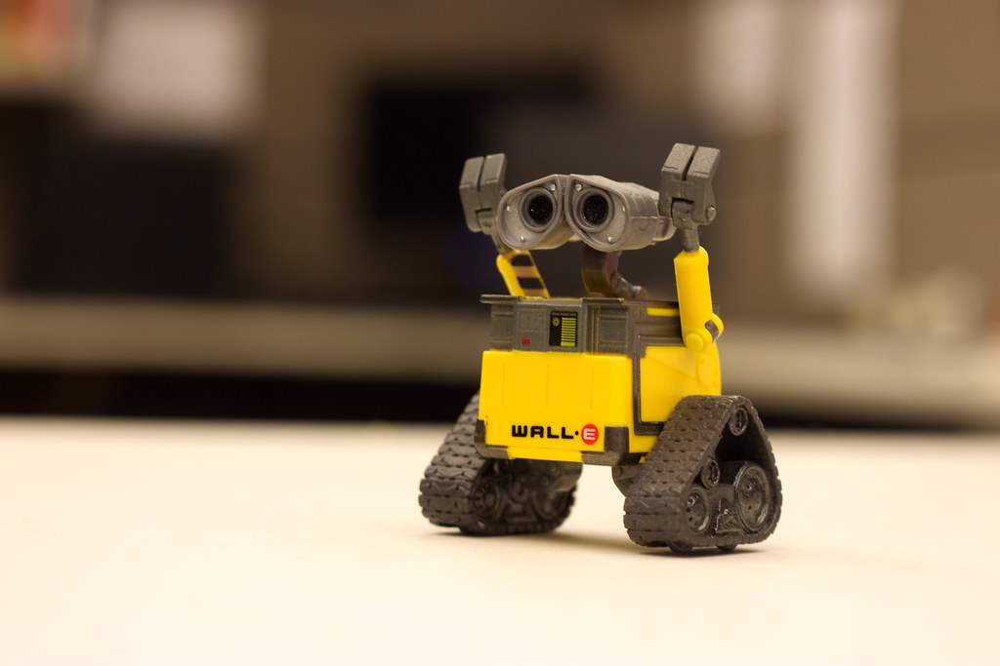
Lumen dice ¿Necesitas una pista?
¿Quieres saber qué tienen en común?
Todos estos aparatos tienen en común que incorporan por lo menos un sensor.
Estos sensorespermitendetectar magnitudes del entorno para controlar funciones que realiza el aparato. Hoy en día, una gran cantidad de aparatos que nos rodean incorporan sensores en su funcionamiento. Nuestra placa robótica micro:bit también dispone de varios sensores.
3. ¿Qué es un sensor, cómo funciona y para qué sirve?
¿Qué es?
Es un dispositivo que detecta un cambio en el entorno y lo refleja en su salida.
Un sensor detecta una magnitudfísica o química y la convierte en una salidaeléctrica que puede ser un voltaje o tensión, corriente, resistencia u otra magnitud eléctrica medible que varía con el tiempo o en algunos casos, en una señal digital.
El término sensor es muy genérico y agrupavariaselementos dentro del dispositivo: el captador que recibe la señal y el transductor que transforma una magnitud en otra. Es común que los tres términos se usen indistintamente.
En algunos casos convierte su señal salida en una pantallalegible para las personas o bien, la transmite a otro dispositivo para su lectura o procesamiento adicional.
Un sensor siempre seusajuntoaotroscomponentes electrónicos, sólo no tiene aplicación directa. Normalmente su salida se transmite a un microprocesador.
Funcionamiento
Un sensor se encuentra formado de componentes tales como LDR (Light Dependent Resistor, en español, resistencia que su valor depende de la luz que le incide), NTC (Negative Temperature Coefficient, es una resistencia cuyo valor depende de la temperatura, se le denomina termistor), resistencias variables, o cualquier otro componente que varía su magnitud de acuerdo con alguna variable física o química, y por componentes activos.
Un sensor tiene varios parámetros fundamentales:
Rango: valores entre los que puede medir.
Precisión: es el error de medida máximo esperado.
Resolución: la variación mínima que puede detectar.
Sensibilidad: lo que varía la magnitud de salida en relación con la variación de la magnitud medida.
Rapidez de respuesta.
Entre otros.
Clasificación
Los sensores se pueden clasificar atendiendo a varios criterios:
Señal que emiten: analógicos y digitales.
Influencia que tienen sobre el proceso: sensores pasivos cuando no influyen y sensores activos cuando absorben energía.
Parámetros que pueden variar en el sensor: mecánicos, eléctricos, electromagnéticos, ópticos...
En el caso de los sensores analógicos y digitales, miden una magnitud física o química y la convierten en una salida como un voltaje analógico o digital.
Los sensores analógicosgeneran una señal analógica acorde a lo que detectan. Estos sensores transforman el cambio del entorno en un voltajeanalógico.
De forma similar, los sensores digitalesgeneran una señaldigital acorde a lo que miden en su entrada. Tendrán dos estados: cambio del entorno detectado o no detectado, es decir, si o no, 1 o 0, activado o desactivado. La señal de salida eléctrica que genera dependerá de la fuente de alimentación, por ejemplo, puede ser 5V o 0V.
Aplicaciones
En general, la tecnología actual permite disponer de una amplia gama de sensores que se pueden utilizar para diversasaplicaciones.
Los sensores se pueden usar para medirvariaciones en las condiciones de una magnitud física o química del entorno, provocando el accionando en otros dispositivos como sonar alarma, encendido o apagado de luces, movimiento en actuadores...
Los sensores son indispensables en muchas aplicaciones industriales que se utilizan para el control de procesos, ya que permiten detectar parámetros que serían indetectables para el ser humano.
Las áreas más comunes de aplicación de los sensores son:
La industria para el control de sus procesos de fabricación y mantenimiento industrial.
Industria automotriz en sus vehículos.
Industria aeroespacial.
Robótica.
Medicina.
Entre otras.
Vídeo
En el siguiente vídeo puedes ver ¿Qué miden los sensores?
Si lo necesitas, puedes descargar los subtítulos del video en formato texto haciendo clic aquí. Si lo prefieres también los puedes descargar en formato de subtítulo .vtt haciendo clic aquí. Nota: Se abrirán en ventananueva. Colócate sobreeltexto, haz clic en el botónderecho de tu ratón y podrás descargarlos en el formatooriginal.
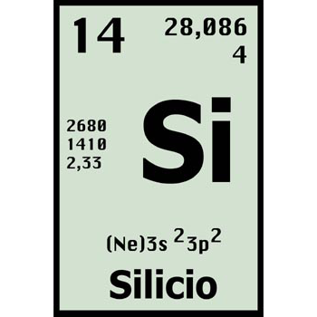
Definición:
Es un material muy abundante que puede comportarse como un conductor o aislante de la corriente eléctrica. Se utiliza en la industria electrónica y microelectrónica, para fabricar componentes.
Ejemplo:
La mayoría de los componentes electrónicos están hechos de silicio.
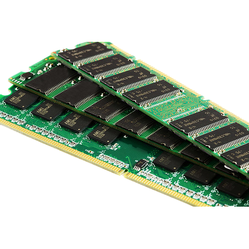
Definición:
RAM acrónimo de Random Access Memory o Memoria de Acceso Aleatorio. Es la memoria principal de un dispositivo, es donde se almacenan de forma temporal los datos de los programas que se están utilizando en ese momento.
Ejemplo:
La memoria RAM almacena la información de los sensores.
Definición
Es la medida de la cantidad de carga eléctrica que atraviesa una determinada sección de un conductor de un circuito cerrado en la unidad de tiempo. También recibe el nombre de intensidad y se mide en Amperios.
Ejemplo
La corriente que circula por ese cable es tan alta que resulta peligrosa.
Definición
Es la medida de la oposición al paso de una corriente eléctrica a través de un material.
Ejemplo
Los materiales aislantes de la electricidad se caracterizan por tener una muy alta resistencia eléctrica.
Definición
Es aquello que indica la energía que se transmite a una carga eléctrica en un determinado circuito. También recibe el nombre de diferencia de potencial o de voltaje (en referencia a la unidad en que se mide que es el Voltio).
Ejemplo
La tensión en los enchufes de nuestras casas es de alrededor de 230 Voltios.
Lectura facilitada
¿Qué es un sensor?
Un sensor es una dispositivo que sirve para detectar cambios en nuestro entorno.
El sensor detecta en su entrada una magnitud física o química y la convierte para que salga una salida eléctrica.
Es un término genérico que engloba varios elementos: el captador que recibe la señal y el transductor que transforma una magnitud en otra.
Un sensor se encuentra formado de componentes que varían su magnitud de acuerdo con alguna variable física o química.
Los sensores se pueden clasificar atendiendo a varios criterios:
Señal que emiten: analógicos y digitales.
Influencia que tienen sobre el proceso: sensores pasivos: cuando no influyen y sensores activos cuando absorben energía.
Parámetros que pueden variar en el sensor: mecánicos, eléctricos, electromagnéticos, ópticos,...
Circuitos de entrada y salida para comunicarse y poder controlar otros aparatos conectados.
En general, la tecnología actual permite disponer de una amplia gama de sensores que se pueden utilizar para diversas aplicaciones.
Definición:
Es la memoria principal de un dispositivo.
Ejemplo:
La memoria RAM almacena la información de los sensores.
Definición:
Elemento que lleva información a un sistema informático.
Ejemplo:
El ratón y el teclado son entradas de un ordenador.
Definición:
Elemento que muestra la información en un sistema informático.
Ejemplo:
La pantalla es un componente de salida en un ordenador.
Definición:
Es un programa que permite escribir código y transformarlo en una aplicación informática.
Ejemplo:
Python es un entorno de programación.
Definición:
Dar instrucciones a una máquina o aparato para que realice funciones.
Ejemplo:
Vamos a programar el robot.
Kardia dice ¿Quieres saber más sobre los sensores?
¿Sabes la importancia de los sensores en la sociedad actual?
Los sensores son fundamentales en muchos ámbitos de la sociedad actual. Son determinantes en instalaciones de seguridad, vigilancia, monitoreo de información en general, automatización de procesos y en el control de procesos a todas las escalas, incluyendo sobre todo el sector industrial.
En los sistemas de automatización industrial los sensores pueden medir diferentes variables como:
Variables de proceso, como la presión, el flujo, el nivel, el pH, la turbidez, temperatura…
Variables mecánicas, como la posición, dirección de desplazamiento, rotación, número de ciclos, proximidad, presiones estáticas y dinámicas…
Variables eléctricas, como el voltaje, la corriente, la resistencia eléctrica...
Variables ambientales, como la dirección del viento, humedad, velocidad, vibración…
¿Sabes cuál es el origen del término sensor?
La palabra sensor proviene del latín y significa que puede sentir algo externo.
Su composición léxica es:
sensus: acción de sentir, percibir, ser sensible a, darse cuenta de.
or: sufijo añadido que significa agente.
Así que su concepto etimológico es, lo que es sensible a.
¿Sabes cuál fue el primer sensor de la historia?
Aunque es complejo determinar cuál fue el primersensor de la historia, sí se tiene evidencias de sensores creados por el ser humano en distintas épocas de la historia de la humanidad.
En la edad de piedra se diseñaron los primeros sistemas de automatización, consistentes en trampas para cazar animales.
Sobre el año 2000 a.C.(antes de Cristo) en Babilonia el hombre desarrollo sistemas que automatizaban el regadío de los campos.
En el siglo III antes de Cristo Ktesibios diseñó un reloj de agua denominado Clepsydra que utilizaba un sistema de regulación automático del nivel de agua mediante un flotador que actuaba como sensor para conseguir regular la entrada de agua. Posteriormente, Platón en el 378 a.C. diseñó un despertadorautomático basándose en una Clepsydra, colocó bolas metálicas encima del flotador de tal forma que cuando se llenaba el depósito las bolas caían sobre un plato de cobre para producir un sonido.
En el siglo I a.C., Herón de Alejandría describía un dispensador de vino que utilizaba un sensor (flotador) que cerraba una válvula por efecto de vaso comunicantes.
En 1592 Galileo construyó un sensor que detectaba cambios de temperaturas mediante la contracción del aire en un recipiente que desplazaba una columna de agua, determinando así las modificaciones del entorno.
El primertermómetro fue inventado en 1612 por Santorio en Italia, consistía en un líquido dentro de un tubo de vidrio sellado con una escala graduada.
En 1874 científicosfranceses lograron poner en funcionamiento el primer sensorconectado de la historia utilizando la tecnología de comunicaciones de transmisión de señales por onda corta.
Durante muchos años los sensores han estado sin estar conectados a nada, todavía hoy en día hay muchos que solo miden e informan de forma local, sin estar conectados a otros dispositivos. Sin embargo, hoy en día un sensorsin conexión a un procesador o a una red no tiene mucho sentido.
Existen animales con sentidos especiales ¿sabes qué sentidos tienen?
En el reinoanimal hablamos de más de 5 sentidos.
Debido al instinto de supervivencia y adaptación muchas especias han desarrollado sentidos especiales.
Algunos de ellos, son:
Sonar: propagación de ondas de sonido que permite comunicarse o ubicarse. Por ejemplo: murciélagos y delfines.
Orientación magnética: capacidad de orientarse con respecto a los polos magnéticos. Ejemplo: abejas.
Sensibilidad a la temperatura: permite detectar cuerpos calientes a su alrededor. Por ejemplo: las serpientes.
Regeneración: capacidad de regenerar algunas partes de su cuerpo cuando son mutiladas. Ejemplo: calamar y lajartijas.
Sensores inteligentes de las ciudades
En la actualidad disponemos de una generación de sensoresinteligentes que permiten diseñar espacios en los que continuamente se están detectando y recopilando información muy variadas.
Las ciudadesinteligentes son un ejemplo de aplicación de estos sensores.
Si lo necesitas, puedes activar los subtítulos del video.
Clavis dice Puedo ayudarte a memorizar esta información
Para conseguir alcanzar una meta es importante que seas un buen o buena estratega. Es decir, tener métodos, técnicas, “trucos” para llegar antes o de forma más fácil donde tú quieres.
Ahora te voy a enseñar una estrategia, ¡Aprovéchala para alcanzar tu reto!
El nombre de la estrategia es memorización. Cuando estás desarrollando una tarea es normal que encuentres aspectos que te resulten complicados de memorizar y que puedan llegar a bloquearte si no sabes tratarlos adecuadamente. En esta estrategia vas a aprender a memorizar y recordar la información aplicando algunos consejos básicos que te sugieran cómo organizar tu tiempo y actuar en cada caso para superar la dificultad.
Podrás encontrar todo lo que necesitas sobre esta estrategia en los siguientes enlaces a las siguientes guías de la competencia de aprender a aprender:
Tómate el tiempo que necesites y recuerda que siempre puedes preguntarle al docente o a algún compañero o compañera cuando no entiendas algo.
¡Ánimo, seguro que lo haces genial!
4. ¿Qué sabes sobre los sensores?
En pareja, a partir de la información suministrada en la lectura "1. ¿Qué es un sensor, cómo funciona y para qué sirve?", completa el siguienteesquema, y comenta con tu compañera o compañero las conclusiones que se extraen de él.
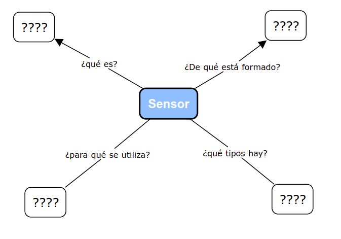
Motus dice ¿Te has dado cuenta de la cantidad de cosas que has tenido que hacer para completar la actividad?
Al realizar esta actividad has tenido que poner en juego todo lo que sabes. A veces para aprender tenemos que trabajar de forma constante. Cuando nosesforzamosmuchonuestrotrabajoesvalorado por nuestras profesoras, profesores y familiares. Pero lo más importante es que nos sentimos muycontentos por el trabajo realizado.
Te animo a que sigas trabajando para que puedas aprender y seguir mejorando.
5. Qué papel tienen los sensores en el control de los procesos?
Como hemos visto, los sensores reciben constantemente variaciones en una magnitud física o química de nuestro entorno y las convierten en otro tipo de señales, generalmente eléctricas, en un sistema de medida o control.
Los robots reciben información de su entorno gracias a los sensores, la procesan en un microcontrolador y emiten una respuesta a través de un actuador. A este sistema se le denomina un sistema de control que permite actuar sobre las variables de un proceso dependiendo de los valores detectados, con la finalidad de mantenerlo controlado.
Los sensores son dispositivos muy importantes en el control de un proceso.
Así, se pueden elaborar programas que utilicen los valores de los sensores como desencadenante de otras acciones. Como, por ejemplo, los sistemas de control cotidianos: luces que se encienden cuando el nivel de luz cae por debajo de cierto valor, aire acondicionado que se apaga cuando la temperatura baja por debajo de cierto valor o alarmas que suenan cuando se detecta movimiento.
Vamos a diferenciar dos tipos de sistemascontrol, de lazo abierto y cerrado. Además, según la naturaleza de sus elementos tenemos sistemas de control manuales y automáticos.
Lazo de control abierto
En este tipo de sistema de control la salidanotieneefecto sobre el sistema.
Estos sistemas se denominan automatismos y no robots porque al no tener en cuenta la salida del proceso su capacidad de control efectiva es poco "inteligente".
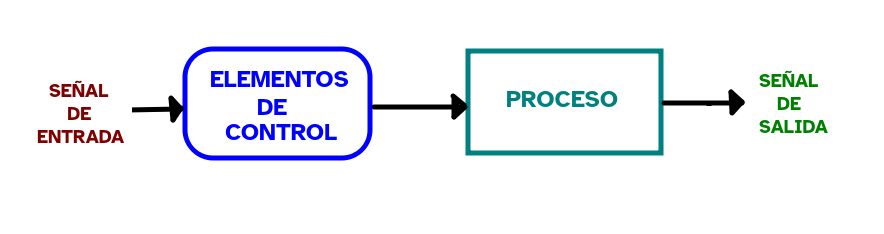
Por ejemplo, una tostadora calienta el pan durante un tiempo determinado independientemente de que si la tostada está hecha o no. El microondas calienta durante el tiempo programado sin conocer el estado de la sustancia o alimento introducido.
Lazo de control cerrado
En estos sistemas la toma de decisiones no solo depende de la entrada sino también de la salida.
Los robots funcionan como sistemas de control cerrados.
Estos sistemas son capaces de reaccionar si la salida que está obteniendo no es la esperada.
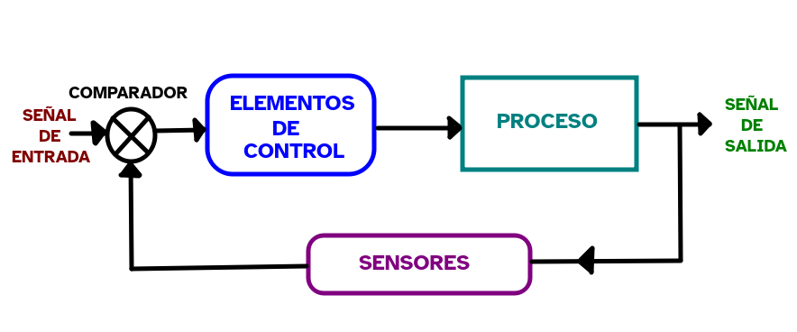
Por ejemplo, un sistema de riego automático que está midiendo constantemente la humedad de las plantas para poner en marcha o detener el riego.
Control manual y automático
Antiguamente los ajustes necesarios en un proceso los realizaba una persona (control manual) utilizando sus propios sentidos. Pero nuestros sentidos tienen sus limitaciones.
El ser humano ha creado los sensores que normalmente superan nuestra capacidad para percibir el entorno.
En la actualidad, las diferentes variables físicas o químicas son controladas por un sistema electrónico o robótico (control automático).
Vamos a trabajar en pareja el siguiente ejemplo:
Deseamos controlar de forma automática el encendido de las luces de un dormitorio cuando se haga de noche.
En el caso del control manual de este proceso nuestro sentido de la vista detecta una cantidad de luz baja, envía esa información a nuestro cerebro que a su vez envía la orden a nuestras extremidades para accionar el interruptor de la luz.
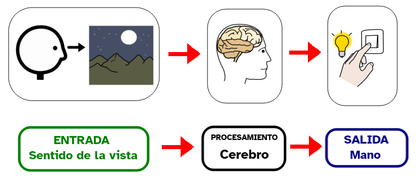
Si deseamos automatizar este proceso (control automático), piensa y representa en un esquema o diagrama de bloques cómo sería este proceso y el papel que juega el sensor en el mismo.
Lumen dice ¿Necesitas ayuda con este ejercicio?
Ten presente que para empezar el ejercicio debes completar cada uno de los bloques del siguiente diagrama que describe el proceso de control automático para el encendido de una luz cuando se hace de noche.
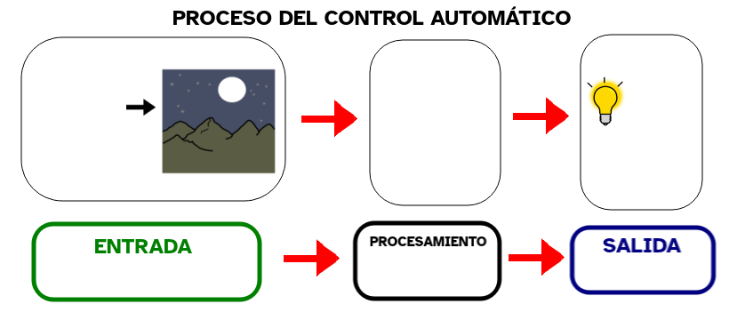
6. ¿Qué tipos de sensores hay?
Vamos a ver la clasificación más usada de los sensores que se fundamenta en el tipo de señal que generan en su salida: digital o analógica.
Si deseamos comprender el funcionamiento o conectar un sensor externo a nuestra placa, tendremos que averiguar si el sensor es digital o analógico.
Existen otrasclasificaciones de los sensores que se fundamentan en la magnitud física o química que son capaces de detectar.
Así que podemos clasificar los sensores en:
Sensores digitales
En estos sensores su salida en una señalcodificada en forma de pulsos o en código binario (0,1). Son comunes en diversas aplicaciones.
Dentro de este tipo de sensores podemos encontrar los sensores todo-nada que indican sólo cuando la variable detectada sobrepasa o no, un nivel determinado.
Entre ellos encontramos:
Pulsadores: cuando pulsamos vale un 1 y cuando no pulsamos 0.
Sensores inductivos y capacitivos: detectan la presencia o no de un objeto en su entorno.
Contacto: son interruptores que se pueden desactivar o activar si están o no en contacto con algún objeto.
Presostato: detecta cuando la variable presión alcanza un valor determinado.
Termostato: detecta cuando la variable presión alcanza un valor determinado.
Entre otros.
Sensores analógicos
Estos sensores dan como salida una señalvariable en forma continua dentro del rango de medida. Algunos de los sensores que podemos encontrar para aplicaciones de electrónica y robótica, incluso a nivel industrial, son:
Acelerómetro: miden la aceleración lineal.
Sensores de temperatura: mide la temperatura en su entorno.
Sensores de luz y de color: miden la cantidad luz recibida.
Sensores de sonido: miden el sonido recibido convirtiendo las ondas sonoras en señales eléctricas.
Compás Magnetómetro: detectan la dirección del campo magnético de la Tierra, como las brújulas.
Sensores magnéticos: detectan cambios de campos magnéticos.
Sensores de movimiento: detectan movimiento en su entorno.
Sensores de distancia, proximidad IR y ultrasonidos: miden la distancia a la que se encuentran objetos a su alrededor.
Sensores de distancia y proximidad inductivos: detectan la distancia a objetos metálicos.
Sensores Giroscopios: miden velocidad angular y sirven para la orientación de un objeto.
Sensores de presión: miden fuerzas aplicadas sobre ellos, convirtiéndolas en señales eléctricas.
Sensores de gas: detectan la presencia de elementos gaseosos.
Sensores inerciales: combinan acelerómetro, giróscopio y magnetómetro.
Sensores de caudal: miden niveles de flujo de fluido transmitido por el dispositivo.
Sensores de nivel de fluido: miden el nivel del fluido en el que están inmersos.
Sensores meteorológicos: componen una estación metereológica; barómetro, humedad, temperatura, nivel de agua...
Sensores de corriente: detectan la circulación de corriente eléctrica.
Sensores de humedad: mide la humedad en su entorno.
Sensores calidad del aire: miden partículas o gases, polvo o CO2 en el aire.
Lectores de Huellas Dactilares: es un sensor biométrico que identifica una huella dactilar.
Sensores médicos: hay de muchos tipos, sensores de tensión muscular, pulso, entre otros.
Entre otros.
Kardia dice ¿Sabes cuántos sensores hay dentro de un smartphone?
Los Smartphones o teléfonos inteligentes actuales cada vez son más capaces de recoger una infinidad de datos de nuestro entorno gracias a sus sensores.
Nos podemos encontrar con aproximadamente unos 10 sensores. Los más comunes que incluyen son:
Acelerómetro.
Giroscopio.
Magnetómetro.
Proximidad.
Luz.
Barómetro.
Termómetro.
Huellas digitales.
Cámara.
Micrófono.
Humedad.
Podómetro.
Pulsómetro.
Te propongo que investigues para qué se utilizan estos sensores en un smartphone.
7. ¿Sensor analógico o digital?
Lea y complete
8. ¿Qué sensores tiene mi placa?
La placa micro:bit tiene una serie de sensores que recogen datos del entorno que pueden ser utilizados por un programa o ser enviados a otro dispositivo.
A continuación, vemos con detalle estos sensores.
Temperatura
El sensor de temperatura de la placa microbit estádentro del microprocesador por lo que mide una aproximación de la temperatura del aire en grados centígrados (en adelante ºC).
El sensor es poco preciso, debe calibrarse. El rango es de -25ºC a 75ºC.
En el siguiente vídeo puedes observar más información sobre el sensor de temperatura de la placa micro:bit. Está en inglés, pero no te preocupes porque tiene subtítulos en español.
Recuerda que si lo necesitas puedes activar los subtítulos del video.
Luz
La placa microbit dispone de una matriz de LEDs que se utiliza como sensor de luz que mide los niveles de luzambientales.
El rango de medida es de 0 (oscuridad) a 255 (máxima luz).
En el siguiente vídeo puedes observar más información sobre el sensor de luz de la placa micro:bit. Está en inglés, pero no te preocupes porque tiene subtítulos en español.
Recuerda que si lo necesitas puedes activar los subtítulos del video.
Brújula
La placa micro:bit dispone de una brújuladigital integrada llamada magnetómetro que funciona como un sensor que detectacampos magnéticos como el de la Tierra y por lo tanto, funciona como una brújula permitiendo conocer la desviación respecto al nortemagnético de la Tierra, o el de un imán.
Al iniciar su uso entra en modo calibración mediante un juego que consiste en inclinar la placa hasta iluminar todos los píxeles de la matriz de leds.
También permite detectar la presencia de camposmagnéticos próximos.
Puede ser utilizada para detectar hacia dóndesedirige y el movimiento en grados.
En el siguiente vídeo puedes observar más información sobre la brújula de la placa micro:bit. Está en inglés, pero no te preocupes porque tiene subtítulos en español.
Recuerda que si lo necesitas puedes activar los subtítulos del video.
Acelerómetro
Este sensor de la placa micro:bit detectacuando esta seinclina de izquierda a derecha, hacia atrás y hacia adelante y hacia arriba y hacia abajo.
Así que puede ser utilizada para detectar el movimiento, conocer aceleraciones y giros a los que se somete la placa.
La salida está en mili-g.
El sensor también detecta una pequeña cantidad de acciones, como por ejemplo, sacudidas, inclinación y caídalibre.
En el siguiente vídeo puedes observar más información sobre el acelerómetro de la placa micro:bit. Está en inglés, pero no te preocupes porque tiene subtítulos en español.
Recuerda que si lo necesitas puedes activar los subtítulos del video.
Micrófono
La placa micro:bit V2 tiene un micrófono integrado que mide los niveles de sonido, por lo que puede hacer la función de sensor de sonido.
El sensor puede detectarsonidos fuertes o bajos y medir su nivel de sonido. El rango de medida es de 0 a 255.
En el siguiente vídeo puedes observar más información sobre el micrófono de la placa micro:bit. Está en inglés, pero no te preocupes porque tiene subtítulos en español.
Recuerda que si lo necesitas puedes activar los subtítulos del video.
Pulsadores
La placa micro:bit tiene dosbotones pulsadores que están etiquetados como A y B. Se puede detectar la pulsación independiente de cada uno de ellos, así como la pulsación simultánea de ambos.
Se pueden utilizar como sensores de contacto. Su salida es digital, sólo dos posibilidades; pulsado o no pulsado.
En el siguiente vídeo puedes observar más información sobre los botones de la placa micro:bit. Está en inglés, pero no te preocupes porque tiene subtítulos en español.
Recuerda que si lo necesitas puedes activar los subtítulos del video.
Contacto
La placa micro:bit V2 tiene un botóntáctil en el logo integrado que puede ser considerado como un botón extra.
El logotipo táctil es de tipo capacitivo, así que le permite detectar pequeños cambios en los camposeléctricos para saber cuando es presionado (similar al funcionamiento de la pantalla de un teléfono móvil o tableta).
Puede hacer la función de sensor de contacto. En los programas se puede utilizar para activar eventos al pulsarlo, tocarlo por primera vez, al soltarlo y al mantenerlo presionado por un tiempo determinado.
Los pines 0, 1 y 2 de la placa también pueden funcionar como botones táctiles cuando se programan como entradas.
En el siguiente vídeo puedes observar más información sobre el botón táctil de la placa micro:bit. Está en inglés, pero no te preocupes porque tiene subtítulos en español.
Recuerda que si lo necesitas puedes activar los subtítulos del video.
9. Identifica los sensores de tu micro:bit
Coge nuestra placa robótica e intenta identificar sus sensores.
Puedes utilizar el siguiente material de apoyo para reflejar la ubicación exacta de cada uno de los sensores de la placa microbit.
Lumen dice ¿Necesitas ayuda para identificar los sensores?
En la siguiente imagen puedes ver la localización de los sensores de la placa microbit.
Espero que puedas ponerle nombre a todos. Si no es así, repasa el apartado 8. ¿Qué sensores tiene mi placa?
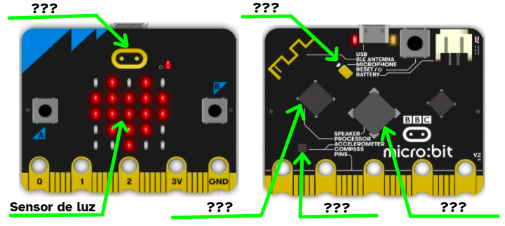
¡Ánimo, seguro que lo haces bien!
10. Comprueba si dominas la relación entre los sensores y los sentidos humanos
Los seres humanos podemos percibir sensaciones como frío, calor, blando, duro, dulce, salado, ligero, pesado, a través de nuestros sentidos.
Los sensores se utilizan para que un sistema electrónico o robótico pueda comunicarse con su entorno al igual que lo hacemos con nuestrossentidos, por la visión (sensor de luz y color), tacto (sensor de contacto), audición (sensor del sonido), olfato (sensor de gases) y gusto (sensores de compuestos químicos).
Pero los sensoresvanmásallá de lo que el ser humano puede captar y medir.
Las personas tenemos cincosentidos básicos, pero muchos animales tienen sentidos con mayor capacidad de detección; así las máquinas pueden tener una visión térmica como la que tienen los reptiles, un medidor de campo magnético como muchos peces y aves, un sensor de sonido como el oído de los perros o un analizador químico como el de los insectos.
Por lo tanto, los sistemasrobóticos tienen sensores que imitan los sentidos de los seresvivos y permiten que los robots interactúen con el entorno.
En pareja, elabora una tabla que refleje la equivalencia entre algunos los sentidos humanos y sus similares sensores electrónicos.
11. ¿Tenemos más de cinco sentidos?
El cuerpo humano posee una gran cantidad de receptores que nos permiten percibir nuestro entorno y aunque están relacionados directa o indirectamente con los cinco sentidos básicos (vista, audición, olfato, gusto y tacto) poseen su propio nombre y en algunos casos se dice que pueden ser tratados como sentidos adiciones a estos.
Algunos de los más importantes son:
Propiocepción: es el sentido a través del cual percibimos nuestro propio cuerpo. Así el cerebro sabe dónde está cada parte y cómo se está moviendo.
Termorrecepción: nos permite percibir la temperatura.
Equilibriocepción: regula el sentido del equilibrio.
Nocicepción: la percepción del dolor.
¿Quieres probar uno de estos sentidos?
Te propongo el siguiente ejercicio en pareja, cierra los ojos e intenta tocar con el dedo índice de tu mano la punta de la nariz de tu compañera o compañero. ¡Ten cuidado! ¿Difícil con los ojos cerrados?
Ahora intenta hacer lo mismo, pero esta vez toca tu propia nariz ¿Y por qué ahora es tan fácil, si no puedes ver?
12. La función de los sensores y actuadores
Comprueba que sabes cuál es la función de un sensor y de un actuador.
Opción A: Recuerda la función
Opción B: Explicamos la función
Explica de forma resumida y con tus propias palabras cuál es la función de un sensor y de un actuador.
Crea una relación de aparatos que usas en tu vida cotidiana que crees que tienen un sensor y otra lista de objetos que crees que no llevan un sensor.
Opción C: ¿En la cámara de un móvil?
Con lo que has aprendido justifica por qué crees que la cámara de un móvil lleva un sensor.
14. La importancia de los sensores
Comprueba que reconoces la importancia de los sensores en la sociedad actual.
Opción A: Recuerda su importancia
Retroalimentación
Verdadero
En la actualidad la mayoría de aparatos que usamos utilizan sensores para comunicarse con el entorno.
Opción B: Imagina la vida sin ellos
Imagina que no se hubieran inventado los sensores, ¿Qué aparatos que consideras importantes crees que no existirían? ¿Cómo crees que afectaría a nuestras vidas?
 Hasta ahora hemos visto las señales analógicas y digitales, las entradas y salidas de nuestra placa y su importancia en el funcionamiento de la misma.
Hasta ahora hemos visto las señales analógicas y digitales, las entradas y salidas de nuestra placa y su importancia en el funcionamiento de la misma. Definición:
Definición: Definición:
Definición: Definición:
Definición: Definición:
Definición: